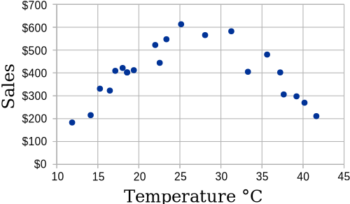
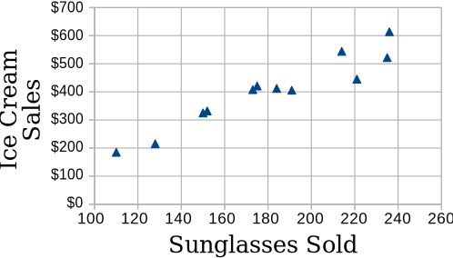
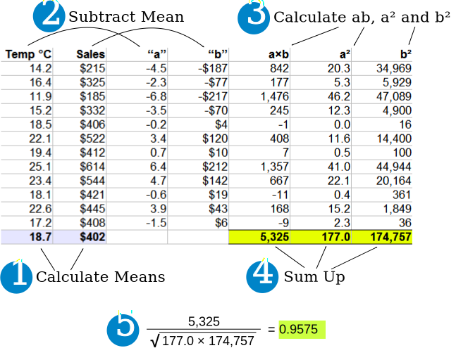
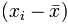
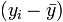
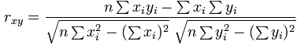

Correlation
When two sets of data are strongly linked together we say they have a High Correlation.
The word Correlation is made of Co- (meaning "together"), and Relation
- Correlation is Positive when the values increase together, and
- Correlation is Negative when one value decreases as the other increases
A correlation is assumed to be linear (following a line).

Correlation can have a value:
- 1 is a perfect positive correlation
- 0 is no correlation (the values don't seem linked at all)
- -1 is a perfect negative correlation
The value shows how good the correlation is (not how steep the line is), and if it is positive or negative.
Example: Ice Cream Sales
The local ice cream shop keeps track of how much ice cream they sell versus the temperature on that day. Here are their figures for the last 12 days:
| Ice Cream Sales vs Temperature | |
| Temperature °C | Ice Cream Sales |
|---|---|
| 14.2° | $215 |
| 16.4° | $325 |
| 11.9° | $185 |
| 15.2° | $332 |
| 18.5° | $406 |
| 22.1° | $522 |
| 19.4° | $412 |
| 25.1° | $614 |
| 23.4° | $544 |
| 18.1° | $421 |
| 22.6° | $445 |
| 17.2° | $408 |
And here is the same data as a Scatter Plot:

We can easily see that warmer weather and higher sales go together. The relationship is good but not perfect.
In fact the correlation is 0.9575 ... see at the end how I calculated it.
Also try the Correlation Calculator.Correlation Is Not Good at Curves
The correlation calculation only works properly for straight line relationships.
Our Ice Cream Example: there has been a heat wave!
It gets so hot that people aren't going near the shop, and sales start dropping.
Here is the latest graph:

The correlation value is now 0: "No Correlation" ... !
The calculated correlation value is 0 (I worked it out), which means "no correlation".
But we can see the data follows a nice curve that reaches a peak around 25° C.
But the correlation calculation is not "smart" enough to see this.
Moral of the story: make a Scatter Plot, and look at it!
You may see a relationship that the calculation does not.
"Correlation Is Not Causation"
A common saying is "Correlation Is Not Causation".
What it really means is that a correlation does not prove one thing causes the other:
- One thing might cause the other
- The other might cause the first to happen
- They may be linked by a different thing
- Or it could be random chance!
There can be many reasons the data has a good correlation.
Example: Sunglasses vs Ice Cream
Our Ice Cream shop finds how many sunglasses were sold by a big store for each day and compares them to their ice cream sales:

The correlation between Sunglasses and Ice Cream sales is high
Does this mean that sunglasses make people want ice cream?
Example: Poor suburbs are more likely to have high pollution.
Why?
- Do poor people make pollution?
- Are polluted suburbs the only place poor people can afford?
- Is it a common link, such as factories with low paying jobs and lots of pollution?
Example: A Real Case!
A few years ago a survey of employees found a strong positive correlation between "Studying an external course" and Sick Days.
Does this mean:
- Studying makes them sick?
- Sick people study a lot?
- Or did they lie about being sick so they can study more?
Without further research we can't be sure why.
How To Calculate
How did I calculate the value 0.9575 at the top?
I used "Pearson's Correlation". There is software that can calculate it, such as the CORREL() function in Excel or LibreOffice Calc ...
... but here is how to calculate it yourself:
Let us call the two sets of data "x" and "y" (in our case Temperature is x and Ice Cream Sales is y):
- Step 1: Find the mean of x, and the mean of y
- Step 2: Subtract the mean of x from every x value (call them "a"), and subtract the mean of y from every y value (call them "b")
- Step 3: Calculate: ab, a2 and b2 for every value
- Step 4: Sum up ab, sum up a2 and sum up b2
- Step 5: Divide the sum of ab by the square root of [(sum of a2) × (sum of b2)]
Here is how I calculated the first Ice Cream example (values rounded to 1 or 0 decimal places):

As a formula it is:

Where:
- Σ is Sigma, the symbol for "sum up"
-  is each x-value minus the mean of x (called "a" above)
-  is each y-value minus the mean of y (called "b" above)
You probably won't have to calculate it like that, but at least you know it is not "magic", but simply a routine set of calculations.
Note for Programmers
You can calculate it in one pass through the data. Just sum up x, y, x2, y2 and xy (no need for a or b calculations above) then use the formula:

Other Methods
There are other ways to calculate a correlation coefficient, such as "Spearman's rank correlation coefficient".